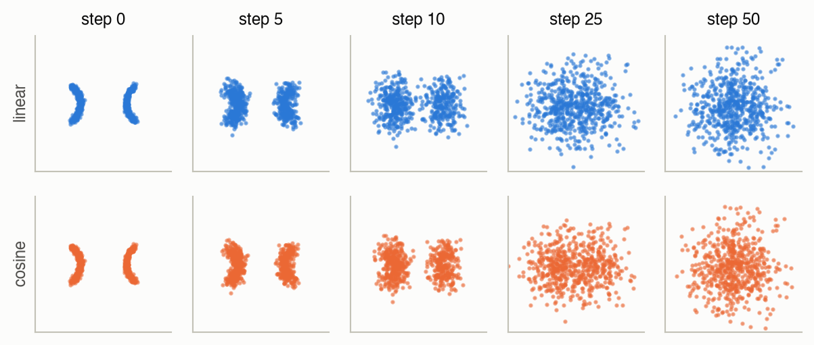
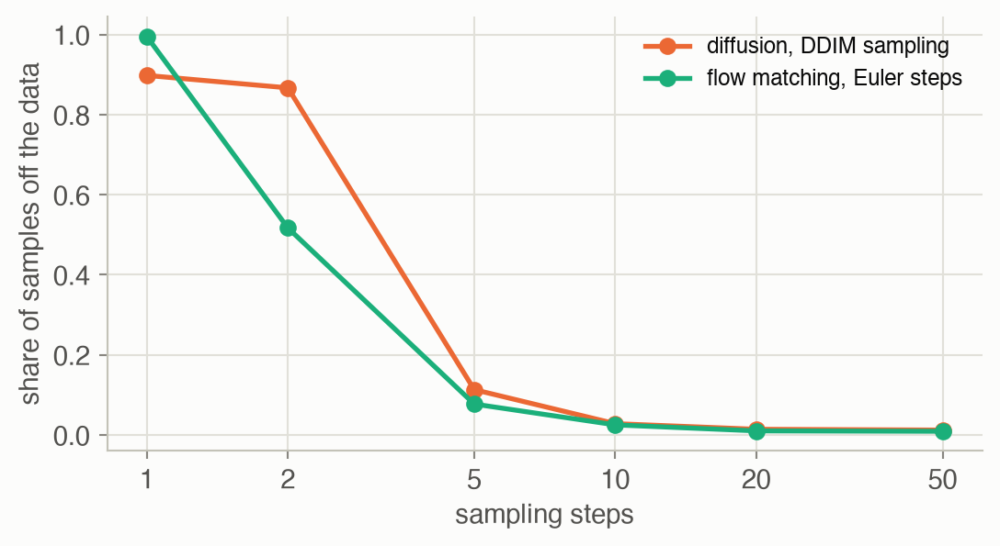
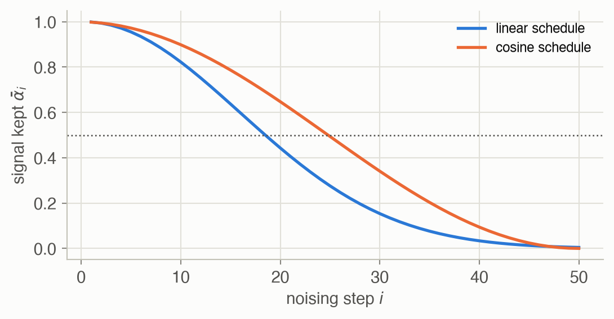

Week 6 · Generative Models
Lecture of 23 March 2026 · guest: Cheng Chi
Big picture
Where this week fits
Week 3 ended on a problem: when demonstrators do the same task in different ways, a policy trained with squared error averages them, and the average can drive straight into the obstacle the demonstrators went around. The fix was a policy that outputs a distribution over actions. This week is about the machinery for that: generative models, which the lecture presents in three families, latent-variable models, diffusion models and flow models, and then shows in robot policies ▶ 00:30. Week 7 turns to sequence models, and Week 9’s generalist policies use the flow-matching idea from this week to produce actions.
The question this week answers: how can a policy represent, and sample from, a complicated distribution over actions?
The key ideas at a glance
- A generative model turns simple noise into data. Start from samples of a standard Gaussian; learn a transformation whose outputs look like the training data. For a robot, the “data” are actions or action sequences, and the transformation is conditioned on what the robot sees.
- Latent-variable models squeeze each example into a small code and decode it back. A variational autoencoder (VAE) makes that code a random variable with a known distribution, so new codes can be sampled. A vector-quantized VAE (VQ-VAE) uses a codebook of discrete codes instead, which turns data into tokens.
- Diffusion models learn to undo noise. Training adds Gaussian noise to clean examples in many small steps; a network learns to predict the noise that was added. Sampling starts from pure noise and removes it step by step.
- Fewer steps and steering. DDIM samples deterministically with far fewer steps; classifier-free guidance strengthens the effect of a condition such as an instruction.
- Flow matching learns a velocity field that carries noise to data along straight lines, and samples by following it with a few integration steps. It is now the most common way vision-language-action models produce actions.
- In robots: Diffusion Policy denoises sequences of future actions conditioned on camera images; later work scales the idea with transformers, and π0 uses flow matching.
Vocabulary
| Term | Plain meaning |
|---|---|
| Generative model | A model you can draw new samples from that look like the training data |
| Latent variable \(z\) | A hidden code that, once chosen, determines (most of) the output |
| Encoder, decoder | Networks that map data to a code and a code back to data |
| VAE | Autoencoder whose codes follow a known distribution, so new codes can be sampled |
| VQ-VAE | Autoencoder whose code is one of a finite set of learned vectors (a codebook) |
| Diffusion model | Generates data by starting from noise and removing it step by step |
| Noise schedule \(\beta_i\) | How much noise each forward step adds |
| DDPM, DDIM | Two ways to sample a diffusion model: with fresh noise at each step, or deterministically with fewer steps |
| Classifier-free guidance | Mixing conditional and unconditional predictions to follow a condition more strongly |
| Flow matching | Learning a velocity field that moves noise to data along straight paths |
After this week you can
- Explain why a policy needs a distribution, and what each generative family does to represent one.
- Write the DDPM training loss and sampling step, and say why the network predicts noise.
- Explain the speed–quality trade-off of DDIM and flow-matching sampling, and why one sampling step falls back to averaging.
- Describe how Diffusion Policy and π0 turn these models into robot policies.
Intuition
TipAnalogy
Imagine a sand sculpture slowly eroded by wind until it is a smooth, featureless heap. Undoing the whole erosion in one go is hopeless; there are endless sculptures that could have become that heap. But undoing one gust is easy: a slightly blurred sculpture tells you a lot about the slightly sharper one before it. A diffusion model learns to undo one gust at a time, and running it many times turns a heap of noise into a sculpture. Because each run starts from a different heap, it produces different sculptures: one passing left of the tree, another passing right.
Actions are a distribution, not a function
The opening point of the lecture: for a robot, the mapping from what it sees to what it should do is not a function but a distribution ▶ 00:30. The toy on this page makes that concrete. Two thousand demonstrated actions form two curved groups, like a gripper that passes an obstacle on the left or the right at different heights; no demonstration goes through the middle (|x| < 0.5).
![Six small scatter plots on the same axes. Top left: two grey crescent-shaped clouds, one on each side of an empty vertical band in the middle. The MSE panel shows one dot in the middle of the band. The one-Gaussian panel shows an oval cloud covering both crescents and the band. The two-Gaussian panel shows two upright ovals over the crescents, poking outside them at the tips. The diffusion and flow-matching panels show orange and green points closely tracing the two crescents with the middle empty.](w06-generative-models_files/figure-html/fig-models-output-1.png)
The averaging failure from Week 3 is in the second panel: the mean of the demonstrations sits in the empty middle. A single Gaussian is no better; 35% of its samples land in the middle. A mixture of two Gaussians puts every sample on a side but cannot follow the curve: 6.9% of its samples land away from any demonstration (more than 0.2 from the nearest one). The diffusion model and the flow-matching model, given no hint about how many groups there are, put 0.2% and 0.2% of their samples in the middle, averaged over 5 training runs.
A generative model turns noise into data
Every model in this lecture does the same job in a different way: learn a transformation from a simple distribution you can sample, usually a standard Gaussian, to the complex distribution of the data ▶ 03:08. The three families differ in how: encode the data into a code, transport noise to data step by step, or move noise along a velocity field.
Latent-variable models: autoencoders, VAEs and VQ-VAEs
Week 3 already met the idea of a latent variable \(z\) that selects a mode: “go left” or “go right”. An autoencoder learns such codes without labels: an encoder squeezes the input into a small code, a decoder reconstructs the input, and the bottleneck forces the code to keep what matters ▶ 04:12. But its code space has no structure and nothing to sample from. A variational autoencoder makes the encoder output a Gaussian over codes and pulls those Gaussians towards a standard normal prior, so that at test time you can draw \(z\) from the prior and decode it ▶ 06:42. Training needs a trick, because drawing a random sample has no gradient: write the sample as the mean plus the standard deviation times independent noise, and gradients flow through the mean and standard deviation (Equation 2) ▶ 08:53.
VAEs have two known failures ▶ 14:05. A powerful decoder can learn to ignore \(z\) (posterior collapse). And a code sampled from the prior can fall between the regions the training codes occupy, where the decoder has never been trained, and produce an action halfway between two modes: a hallucination, and in robotics possibly an unsafe one. A VQ-VAE replaces the continuous code by the nearest entry of a learned codebook, which forces a commitment to one discrete code ▶ 15:37; since a nearest-neighbour lookup has no useful gradient, training copies the gradient straight past it (Equation 3) ▶ 17:40. The codes form a vocabulary, so a transformer can then be trained to produce sequences of them, the same tokens-for-everything idea as RT-2’s action tokens in Week 1 ▶ 20:45.
Diffusion: learn to remove noise
Diffusion models skip the bottleneck and model the data directly ▶ 24:32. The forward process adds a little Gaussian noise many times, shrinking the signal a bit each time, until nothing but noise is left (Equation 4) ▶ 25:45.

The backward process is what we want: from a noisy point, the slightly less noisy one before it. Predicting that directly is ill-posed, since many clean points could have produced the same noisy one. The key move is to ask the network for something simpler: the noise that was added ▶ 27:09. That is an easy regression target with a plain squared-error loss (Equation 6). Training can jump straight to any noise level in one step, which makes it fast (Equation 5) ▶ 30:34.
What to watch for. The clip opens on the demonstrations, with the empty middle shaded. First the MSE answer appears: a single blue dot, the average, in the one place no demonstrator went. Then a cloud of noise samples appears, centred on that same dot. As the step counter runs, the cloud changes slowly for most of the 50 steps (the early steps remove only a little noise each) and then, in the last few steps, splits: every orange point moves away from the blue dot to one of the crescents. The clip ends on both crescents filled and the middle empty, then fades back to the start.
To sample, start from pure noise and repeatedly subtract the predicted noise. DDPM also adds a little fresh noise at each step, which sounds backwards but keeps samples spread over the whole distribution instead of collapsing towards its mean ▶ 32:22. It needs many steps; image models use around a thousand, too slow for robot control. DDIM visits only a few steps, estimating the clean point and re-noising it deterministically to the next visited step (Equation 8) ▶ 34:20. In the toy, 10 DDIM steps leave 2.8% of samples off the demonstrations; 2 steps leave 87% (Figure 5).
Conditioning and guidance
So far the samples are unconditional: draws from the data distribution with no say over which. A robot needs actions for this observation and this instruction. The simple fix is to give the condition to the noise predictor as an extra input ▶ 35:56. Networks may still learn to half-ignore it, so classifier-free guidance trains one network both with and without the condition (dropping it at random) and, at sampling time, pushes the prediction further in the direction the condition points (Equation 9) ▶ 37:00.
Diffusion as a robot policy
Diffusion Policy applies all of this to actions: instead of denoising pixels, denoise a short sequence of future robot actions, with the camera images and robot state as the condition ▶ 38:59. It trains with the DDPM loss, samples with DDIM, computes the observation features once per decision, and conditions the denoising network with FiLM, a learned per-feature scale and shift ▶ 40:46. It handles multimodal demonstrations well but has been harder to scale to many tasks. Follow-ups attach a diffusion head to a large transformer trained on many robots (Octo) ▶ 42:05, or condition through adaptive layer normalization, borrowed from diffusion transformers for images, which trains more stably and scales to long two-armed tasks ▶ 42:52.
Flow matching: straight lines from noise to data
Flow matching drops the noise schedule: pair each noise sample with a data point, draw the straight line between them, and train a network to predict the velocity along that line (Equation 10) ▶ 43:43. Sampling integrates the learned velocity from noise to data in a few Euler steps. With a linear schedule it is equivalent to diffusion up to a change of variables ▶ 45:35; in practice its paths are straighter and need fewer steps. Rectified flow retrains on noise–data pairs produced by the flow itself, which untangles crossing paths and straightens them further ▶ 46:54. Physical Intelligence’s π0 was, to the lecturer’s knowledge, the first vision-language-action model to produce actions with flow matching; it samples the training time from a shifted Beta distribution to concentrate on the noisier, harder part of the path ▶ 48:03.
One step of flow matching is worth a look. With a single Euler step, the toy’s samples collapse onto the data mean: 98% land in the empty middle. That is not a bug; it is exactly MSE regression again (see Worked example 3).
Key concepts & formulae
The lecture’s notation: \(x_0\) is a clean data point (an action, or an image), \(x_i\) the same point after \(i\) noising steps, \(i = 1, \dots, T\); \(\varepsilon\) is standard Gaussian noise; \(\theta\) and \(\phi\) are network parameters. For flow matching, a continuous time \(t \in [0, 1]\) runs from noise (\(t = 0\)) to data (\(t = 1\)).
Variational autoencoder
\[ \begin{aligned} \log p_\theta(x) \;\ge\;\; & \mathbb{E}_{q_\phi(z \mid x)}\big[\log p_\theta(x \mid z)\big] \\ -\; & \mathrm{KL}\big(q_\phi(z \mid x) \,\big\|\, p(z)\big) \end{aligned} \tag{1}\]
In words. Maximize how well codes inferred from \(x\) let the decoder reconstruct \(x\), while keeping those codes close to a fixed prior that can be sampled at test time.
Term by term.
- \(q_\phi(z \mid x)\): the encoder, a Gaussian over codes with mean and variance computed from \(x\).
- \(p_\theta(x \mid z)\): the decoder; the first term is the reconstruction quality, averaged over codes drawn from the encoder.
- \(p(z)\): the prior, usually \(\mathcal{N}(0, I)\); the KL term is the regularizer that gives the code space its structure.
- \(\log p_\theta(x)\): the likelihood we would like to maximize but cannot compute, because it averages over all codes. Week 3’s goal-conditioned version adds a context \(c\) to every term.
\[ z = \mu_\phi(x) + \sigma_\phi(x) \odot \varepsilon, \qquad \varepsilon \sim \mathcal{N}(0, I) \tag{2}\]
In words. Draw the randomness from a fixed distribution first, then shift and scale it with the encoder’s outputs.
Term by term.
- \(\mu_\phi(x)\), \(\sigma_\phi(x)\): the encoder’s mean and standard deviation; \(\odot\) multiplies element by element.
- \(\varepsilon\): noise with no learnable parameters, so the sampling step is just arithmetic on \(\mu\) and \(\sigma\), and gradients reach the encoder.
Why it helps. The alternative, the score-function estimator that reinforcement learning calls REINFORCE (Weeks 4–5), only sees whether a sample scored well, not which way to move it, so its gradient estimates are noisy. With the reparameterization the gradient of the loss with respect to \(\phi\) goes through \(\partial f / \partial z\), the decoder’s own signal about which direction to move the code.
\[ \begin{aligned} k &= \arg\min_j \big\lVert z_e(x) - e_j \big\rVert_2 \\ z_q &= z_e + \mathrm{sg}\big[e_k - z_e\big] \end{aligned} \tag{3}\]
In words. Replace the encoder’s output by the nearest codebook vector; for the backward pass, pretend the replacement didn’t happen.
Term by term.
- \(z_e(x)\): the encoder’s continuous output; \(e_1, \dots, e_K\): the learned codebook.
- \(k\): the chosen code, a discrete token.
- \(\mathrm{sg}[\cdot]\): stop-gradient, the identity going forward and zero going backward. So \(z_q\) equals \(e_k\) in the forward pass, while \(\partial z_q / \partial z_e = 1\) copies the decoder’s gradient to the encoder.
- Training adds two terms to the reconstruction loss: one moving codebook vectors towards the encoder outputs, and a commitment term keeping the encoder outputs near their codes.
Diffusion
\[ x_{i} = \sqrt{1 - \beta_{i}}\; x_{i-1} + \sqrt{\beta_{i}}\; \varepsilon_{i}, \qquad \varepsilon_i \sim \mathcal{N}(0, I) \tag{4}\]
In words. Each step shrinks the point a little towards zero and adds a little Gaussian noise.
Term by term.
- \(\beta_i\): the noise schedule, small numbers set in advance. This page uses \(T =\) 50 steps with \(\beta\) rising linearly from 0.001 to 0.2.
- \(\sqrt{1-\beta_i}\): the shrink factor, chosen so that a point with unit variance keeps unit variance.
\[ \begin{aligned} x_i &= \sqrt{\bar\alpha_i}\, x_0 + \sqrt{1 - \bar\alpha_i}\; \varepsilon \\ \bar\alpha_i &= \prod_{j=1}^{i} (1 - \beta_j) \end{aligned} \tag{5}\]
In words. After \(i\) steps, the point is a shrunken copy of the clean point plus one combined dose of noise, so training can produce any noise level in one step instead of \(i\).
Term by term.
- \(\bar\alpha_i\): how much of the signal survives after \(i\) steps, falling from near 1 to near 0.
- \(\varepsilon\): a single standard Gaussian draw that stands for all \(i\) steps’ noise.
Why it holds. Apply Equation 4 twice: \(x_2 = \sqrt{\alpha_2\alpha_1}\,x_0 + \sqrt{\alpha_2(1-\alpha_1)}\,\varepsilon_1 + \sqrt{1-\alpha_2}\,\varepsilon_2\) with \(\alpha_j = 1 - \beta_j\). The two noise terms are independent Gaussians, so their sum is Gaussian with variance \(\alpha_2(1 - \alpha_1) + (1 - \alpha_2) = 1 - \alpha_1\alpha_2\). Repeating the argument gives the formula.
Numeric check. With the linear schedule, \(\bar\alpha\) falls below one half after 19 of the 50 steps; with the cosine schedule of Nichol & Dhariwal (2021) it takes 25 steps, which is why the cosine rows of Figure 3 stay recognisable for longer. At the last step \(\bar\alpha_T\) is 0.0045 (linear): almost nothing of the data is left.
\[ \begin{aligned} \mathcal{L}_{\text{simple}} &= \mathbb{E}_{i,\, x_0,\, \varepsilon}\Big[\big\lVert \varepsilon - \varepsilon_\theta(x_i,\, i)\big\rVert^2\Big] \\ x_i &= \sqrt{\bar\alpha_i}\, x_0 + \sqrt{1 - \bar\alpha_i}\,\varepsilon \end{aligned} \tag{6}\]
In words. Pick a training example, a noise level and a noise sample; make the noisy point; ask the network what noise was added; penalize the squared error.
Term by term.
- \(i \sim \text{Uniform}\{1, \dots, T\}\): every noise level is trained.
- \(\varepsilon_\theta(x_i, i)\): the noise predictor, one network for all steps, told which step it is at.
- The whole expression comes from the same evidence lower bound as the VAE, spread over \(T\) steps with a fixed encoder (the forward process); Ho et al. (2020) found that dropping its weighting terms trains better ▶ 28:35.
Numeric check. In the toy the loss starts near 1 (the variance of the noise, what predicting zero would give) and falls to 0.45 over training: the network explains about half the noise on average, much more at low noise levels than at high ones.
\[ \begin{aligned} x_{i-1} &= \frac{1}{\sqrt{\alpha_i}}\Big(x_i - \frac{1 - \alpha_i}{\sqrt{1 - \bar\alpha_i}}\; \varepsilon_\theta(x_i, i)\Big) \\ &\quad + \sigma_i\, z, \qquad z \sim \mathcal{N}(0, I) \end{aligned} \tag{7}\]
In words. Remove the predicted share of noise, undo the shrink, then add a little fresh noise.
Term by term.
- \(\alpha_i = 1 - \beta_i\); the bracket is the estimated mean of the previous, less noisy point.
- \(\sigma_i z\): fresh noise (\(\sigma_i^2 = \beta_i\) here), skipped on the very last step. It keeps different starting points from collapsing onto the same output.
\[ \begin{aligned} \hat{x}_0 &= \frac{x_i - \sqrt{1 - \bar\alpha_i}\; \varepsilon_\theta(x_i, i)}{\sqrt{\bar\alpha_i}} \\ x_{i'} &= \sqrt{\bar\alpha_{i'}}\; \hat{x}_0 + \sqrt{1 - \bar\alpha_{i'}}\; \varepsilon_\theta(x_i, i) \end{aligned} \tag{8}\]
In words. Use the predicted noise to estimate the clean point, then put back exactly the amount of that same noise that the next visited step \(i' < i\) should have.
Term by term.
- \(\hat{x}_0\): invert Equation 5 with the predicted noise in place of the true one.
- \(i'\): the next step in a short subset of steps, for example 10 out of 50, so far fewer network calls.
- No fresh noise: the same start always gives the same result.
Guidance
\[ \hat\varepsilon = \varepsilon_\theta(x_i, i, \varnothing) + w\,\big(\varepsilon_\theta(x_i, i, c) - \varepsilon_\theta(x_i, i, \varnothing)\big) \tag{9}\]
In words. Predict the noise with and without the condition; the difference is the direction the condition pulls in; move \(w\) times as far in that direction.
Term by term.
- \(c\): the condition (an instruction, an observation); \(\varnothing\): a “no condition” token, used for a random share of training examples so one network learns both.
- \(w\): the guidance scale. \(w = 1\) is plain conditional sampling; larger \(w\) follows the condition more closely at the cost of variety.
Flow matching
\[ \begin{aligned} x_t &= (1 - t)\,\varepsilon + t\,x_0, \qquad t \sim \mathcal{U}[0, 1] \\ \mathcal{L} &= \mathbb{E}_{t,\,x_0,\,\varepsilon}\Big[\big\lVert v_\theta(x_t, t) - (x_0 - \varepsilon) \big\rVert^2\Big] \\ x_{t + \Delta t} &= x_t + v_\theta(x_t, t)\,\Delta t \end{aligned} \tag{10}\]
In words. Move along the straight line from a noise sample to a data point; the network learns that line’s constant velocity; to sample, start at noise and take Euler steps along the learned velocity.
Term by term.
- \(x_t\): a point on the straight path, pure noise at \(t = 0\), data at \(t = 1\).
- \(x_0 - \varepsilon\): the true velocity along that path, the same at every \(t\).
- \(v_\theta\): the learned velocity field; at a given \((x_t, t)\) many lines pass through, so it learns their average direction.
- \(\Delta t\): the step size; \(1/\Delta t\) steps take noise to data.
Why one step gives the mean. At \(t = 0\) the point is the noise, \(x_0\) is independent of it, and the best squared-error prediction is \(v_\theta(\varepsilon, 0) = \mathbb{E}[x_0] - \varepsilon\). One Euler step of length 1 then lands at \(\varepsilon + \mathbb{E}[x_0] - \varepsilon = \mathbb{E}[x_0]\), the mean, for every starting noise. In the toy, the one-step samples sit 0.039 from the data mean with a spread of only 0.17. Multimodality needs several steps, because later velocities depend on where the earlier steps went.
Worked examples
Example 1: six models, one data set
How each model in Figure 2 does, from 1,000 samples (diffusion and flow matching: averaged over 5 training runs). “In the gap” means \(|x| <\) 0.5, where no demonstration lies; “off the data” means farther than 0.2 from every demonstration.
| model | in the gap | off the data | on the left |
|---|---|---|---|
| demonstrations | 0.0% | 0.0% | 50% |
| MSE regression | 100.0% | 100.0% | 0% |
| one Gaussian | 35.1% | 71.3% | 51% |
| mixture of 2 Gaussians | 0.0% | 6.9% | 49% |
| mixture of 4 Gaussians | 0.0% | 0.2% | 49% |
| DDPM, 50 steps | 0.2% | 0.7% | 49% |
| flow matching, 20 steps | 0.2% | 0.8% | 50% |
Two lessons. First, a mixture works if you give it enough components: with four Gaussians, only 0.2% of samples are off the data. But you have to choose that number in advance, and two, the “obvious” count of modes here, is too few for curved modes. EM also needs care: started from a poor initial guess it can split the data top/bottom instead of left/right, so the toy keeps the best of five starts. Second, diffusion and flow matching match the data’s shape without being told how many groups it has, and keep the two sides balanced (the “on the left” column).
Example 2: noising one action
Take the demonstrated action \(x_0 = (-1.2, 0.4)\) and one fixed noise draw \(\varepsilon\). Equation 5 gives its noisy versions directly:
With ε = (+0.03, +1.36):
| step i | linear schedule: ᾱ, x_i | cosine schedule: ᾱ, x_i |
|---|---|---|
| 1 | 0.999, (-1.20, +0.44) | 0.998, (-1.20, +0.46) |
| 5 | 0.955, (-1.17, +0.68) | 0.972, (-1.18, +0.62) |
| 10 | 0.823, (-1.07, +0.94) | 0.899, (-1.13, +0.81) |
| 25 | 0.276, (-0.60, +1.37) | 0.494, (-0.82, +1.25) |
| 50 | 0.005, (-0.05, +1.38) | 0.000, (+0.03, +1.36) |
By the last step the point is essentially the noise draw itself. The network’s job during training is to look at, say, the step-10 point and step number and say what \(\varepsilon\) was.
Example 3: how many sampling steps?
Each sampling step is one network call, and on a robot every call costs time. Figure 5 measures what fewer steps cost in the toy.

| steps | DDIM: off the data | flow matching: off the data |
|---|---|---|
| 1 | 89.8% | 99.5% |
| 2 | 86.7% | 51.7% |
| 5 | 11.3% | 7.7% |
| 10 | 2.8% | 2.5% |
| 20 | 1.4% | 1.0% |
| 50 | 1.2% | 0.9% |
With 10 or more steps both are close to the 50-step quality. Below that, quality drops quickly, and at one step both fail completely, for the reason given under Equation 10: the first step from pure noise can only aim at the average of everything.
Interactive
Denoising, step by step
Pick a sampler and move the slider to watch 300 noise samples become actions. Grey: the demonstrations. The blue cross is the MSE answer, the mean.
What to try. Start at step 0, pure noise centred on the blue cross, and step forward. With DDPM, the share of points in the middle band has halved by step 40 of 50, and below 10% by step 42; the fresh noise added at each step keeps the points jittering almost to the end. DDIM gets below 10% at step 8 of 10 and flow matching at step 9 of 10, moving smoothly. In every case the points move away from the cross: each sample picks a side instead of settling on the average.
Noise schedules
Choose a schedule and a step. The browser applies Equation 5 to 500 demonstrated actions with fixed noise.
What to notice. Compare the two schedules at step 10 and step 20. Under the linear schedule the two groups have merged by around step 19, where ᾱ drops below one half; the cosine schedule keeps them apart until about step 25. A schedule that destroys structure too early wastes many steps on near-pure noise, which is the argument Nichol & Dhariwal (2021) made for the cosine schedule.

Algorithm & code
def train_ddpm(data, betas, rng, **kw):
"""Train the noise predictor eps_theta(x_t, t) with the simple DDPM loss:
pick a step t and noise eps, jump to x_t, regress eps."""
T, abar = len(betas), alpha_bar(betas)
def batch(n, rng):
x0 = data[rng.integers(len(data), size=n)]
t = rng.integers(1, T + 1, size=n) # 1..T
eps = rng.normal(size=x0.shape)
return features(noise_to(x0, t, abar, eps), t / T), eps
return train_net(batch, rng, **kw)
def ddpm_sample(params, betas, n, rng, keep_path=False):
"""Start from pure noise and take T denoising steps; each step removes
the predicted noise and adds back a little fresh noise (sigma_t^2 =
beta_t). Returns samples (n, 2), or the whole path (T+1, n, 2)."""
T, abar = len(betas), alpha_bar(betas)
x = rng.normal(size=(n, 2))
path = [x]
for t in range(T, 0, -1):
a, ab = 1 - betas[t - 1], abar[t - 1]
eps = nn.predict(params, features(x, t / T)) # (n, 2)
mean = (x - (1 - a) / np.sqrt(1 - ab) * eps) / np.sqrt(a)
# Fresh noise keeps samples spread out; none on the last step.
z = rng.normal(size=x.shape) if t > 1 else 0.0
x = mean + np.sqrt(betas[t - 1]) * z
path.append(x)
return np.array(path) if keep_path else x
def train_flow(data, rng, **kw):
"""Train the velocity field v_theta(x_t, t) on straight paths
x_t = (1 - t) eps + t x0, t in [0, 1], whose velocity is x0 - eps."""
def batch(n, rng):
x0 = data[rng.integers(len(data), size=n)]
eps = rng.normal(size=x0.shape)
t = rng.uniform(0, 1, size=n)
xt = (1 - t)[:, None] * eps + t[:, None] * x0
return features(xt, t), x0 - eps
return train_net(batch, rng, **kw)
def flow_sample(params, n, rng, steps=10, keep_path=False):
"""Euler integration of the learned velocity from noise (t = 0) to
data (t = 1): x <- x + v(x, t) dt."""
x = rng.normal(size=(n, 2))
path, dt = [x], 1.0 / steps
for k in range(steps):
x = x + nn.predict(params, features(x, k * dt)) * dt
path.append(x)
return np.array(path) if keep_path else ximport numpy as np
import torch
import torch.nn as nn
import torch.nn.functional as F
from rlc.toys import w06_generative as toy
torch.manual_seed(0)
data = torch.tensor(toy.crescents(2000, np.random.default_rng(0)),
dtype=torch.float32) # (2000, 2)
T = 50
betas = torch.tensor(toy.linear_schedule(T), dtype=torch.float32)
abar = torch.cumprod(1 - betas, dim=0) # (T,)
class NoiseNet(nn.Module):
"""eps_theta(x_i, i): a small MLP; the step enters as t = i / T."""
def __init__(self, hidden=128):
super().__init__()
self.net = nn.Sequential(nn.Linear(3, hidden), nn.SiLU(),
nn.Linear(hidden, hidden), nn.SiLU(),
nn.Linear(hidden, 2))
def forward(self, x, t): # x: (B, 2), t: (B,) in (0, 1]
return self.net(torch.cat([x, t[:, None]], dim=1))
eps_net = NoiseNet()
opt = torch.optim.Adam(eps_net.parameters(), lr=3e-3)
losses = []
for _ in range(1500):
x0 = data[torch.randint(len(data), (512,))] # (B, 2)
i = torch.randint(1, T + 1, (512,)) # step 1..T
eps = torch.randn_like(x0)
a = abar[i - 1][:, None] # (B, 1) broadcasts
xi = a.sqrt() * x0 + (1 - a).sqrt() * eps # jump to step i
loss = F.mse_loss(eps_net(xi, i / T), eps) # predict the noise
opt.zero_grad()
loss.backward()
opt.step()
losses.append(loss.item())
@torch.no_grad() # sampling needs no gradients
def ddpm_sample(n):
x = torch.randn(n, 2)
for i in range(T, 0, -1):
t = torch.full((n,), i / T)
alpha, ab = 1 - betas[i - 1], abar[i - 1]
mean = (x - (1 - alpha) / (1 - ab).sqrt() * eps_net(x, t)) / alpha.sqrt()
x = mean + (betas[i - 1].sqrt() * torch.randn_like(x) if i > 1 else 0)
return x
samples = ddpm_sample(500)
assert np.mean(losses[-100:]) < np.mean(losses[:20])
assert (samples[:, 0].abs() < toy.GAP).float().mean() < 0.1 # middle emptyclass VelocityNet(NoiseNet):
"""v_theta(x_t, t): same architecture, now predicting a velocity."""
v_net = VelocityNet()
opt = torch.optim.Adam(v_net.parameters(), lr=3e-3)
for _ in range(1500):
x0 = data[torch.randint(len(data), (512,))]
eps = torch.randn_like(x0)
t = torch.rand(512) # (B,) in [0, 1)
xt = (1 - t)[:, None] * eps + t[:, None] * x0 # straight path
loss = F.mse_loss(v_net(xt, t), x0 - eps) # its velocity
opt.zero_grad()
loss.backward()
opt.step()
@torch.no_grad()
def flow_sample(n, steps):
x, dt = torch.randn(n, 2), 1.0 / steps
for k in range(steps): # Euler steps
x = x + v_net(x, torch.full((n,), k * dt)) * dt
return x
in_gap = lambda s: (s[:, 0].abs() < toy.GAP).float().mean().item()
assert in_gap(flow_sample(500, steps=1)) > 0.5 # one step: the mean
assert in_gap(flow_sample(500, steps=20)) < 0.1 # many steps: two modesThe two training loops differ in one line each: what point is made from the clean example and the noise, and what the network is asked to predict. The two samplers differ in whether they remove noise with fresh noise added back (DDPM) or follow a velocity (flow matching).
Papers
Papers discussed in class
Key papers from the lecture
Guest spotlight
Cheng Chi, lead author of Diffusion Policy and author of the Universal Manipulation Interface (a hand-held data-collection gripper), is now co-founder and CTO of Sunday Robotics. His talk, “Robotics Beyond Algorithms”, is about what he learned after his PhD that algorithms courses don’t teach ▶ 02:07.
Hardware is a supply chain. A hardware project’s bill of materials plays the role of a software project’s dependency list, but “installing” it means procurement, and every part has suppliers with their own suppliers ▶ 06:44. Retail creates the illusion of instant availability; ordering in quantity, or changing a part, means coordinating that whole tree, which shapes what to build and what to buy ▶ 10:31. Building a thousand data-collection gloves then needs written assembly procedures, a serial number on every unit, calibration and quality checks, and software that traces every glove’s history all the way into the training data loader, so a researcher can drop data from a faulty batch with a config change ▶ 14:42.
Data collection is about people. Collecting data as a few researchers is easy; scaling from tens of collectors to thousands made data collection an operation, where clear communication and trust mattered more than clever tooling ▶ 16:44. His conclusion is that robotics sits at the intersection of every engineering discipline, so the people who make robots work are those who understand the stack from hardware to learning ▶ 23:17.
How it connects to this week. Diffusion Policy is the method this lecture builds up to, and its author’s message is that the method was the smaller part: the demonstrations a generative policy learns from come from hardware and people, and their quality decides what the model can learn.
Solved problems
1. The average again. Half the demonstrations at a state choose action \(+1\) and half \(-1\). What does an MSE-trained policy output, what fraction of a single Gaussian fit’s samples fall in \((-0.5, 0.5)\), and what does a two-component mixture do?
TipSolution
MSE outputs the mean, 0, which no demonstrator chose. A single Gaussian fit has mean 0 and standard deviation 1 (the data’s), so \(\Pr(|a| < 0.5) = 2\Phi(0.5) - 1 \approx 0.38\): over a third of its samples are between the modes. A two-component mixture can put one narrow Gaussian at each of \(\pm 1\) with weight one half, matching the data. The catch, shown in Worked example 1, is that you must choose the number of components, and Gaussians can’t follow curved modes.
2. Signal left after noising. With \(\beta_i = 0.1\) at every step, what fraction of the signal amplitude survives 10 steps, and what is the noise standard deviation then?
TipSolution
\(\bar\alpha_{10} = 0.9^{10} \approx 0.349\). The signal is scaled by \(\sqrt{\bar\alpha_{10}} \approx 0.59\), and the noise has standard deviation \(\sqrt{1 - 0.349} \approx 0.81\) (Equation 5). After 50 such steps \(\bar\alpha \approx 0.0052\) and the signal is scaled by about 0.07: almost pure noise.
3. Why predict the noise? Give two reasons a diffusion network is trained to predict \(\varepsilon\) rather than \(x_{i-1}\).
TipSolution
First, the target is well-posed and simple: \(\varepsilon\) is a standard Gaussian draw that we know exactly, while many different \(x_{i-1}\) are consistent with a given \(x_i\). Second, the loss becomes a plain squared error at every noise level, the simplified objective of Ho et al. (Equation 6); with Equation 5, one training example can be made at any noise level in a single step. Predicting the noise is equivalent to predicting the clean point \(\hat x_0\) (Equation 8), so nothing is lost.
4. Guidance by numbers. At some step the unconditional prediction is \(\varepsilon_\theta(x, i, \varnothing) = (0.2, 0.1)\) and the conditional one is \(\varepsilon_\theta(x, i, c) = (0.5, -0.1)\). What is the guided prediction for \(w = 1\) and \(w = 3\)?
TipSolution
The difference is \((0.3, -0.2)\). With \(w = 1\): \((0.2, 0.1) + (0.3, -0.2) = (0.5, -0.1)\), the plain conditional prediction. With \(w = 3\): \((0.2, 0.1) + (0.9, -0.6) = (1.1, -0.5)\), pushing three times as far in the condition’s direction (Equation 9).
5. Real-time budget. A robot runs its policy at 10 Hz and a denoising network call takes 8 ms. How many sampling steps fit in the budget, and which sampler would you use?
TipSolution
At 10 Hz there are 100 ms per decision, so at most 12 network calls, less in practice once observation encoding and communication are counted. A 50-step DDPM is out; DDIM with about 10 steps, or flow matching with about 10 Euler steps, fits, and in the toy 10 steps lose little quality (Worked example 3). Predicting a whole action sequence per decision, as Diffusion Policy does, buys more time.
Recap
- A policy should represent a distribution of actions. Why it matters: it is the fix for Week 3’s averaging failure, and the basis of every modern robot policy that learns from human demonstrations.
- Latent-variable models encode, VAEs make codes samplable, VQ-VAEs make them tokens. Why it matters: discrete codes let the transformers of Weeks 7 and 9 treat images, actions and plans as sequences.
- Diffusion learns to predict noise, then removes it step by step. In the toy it leaves the empty middle 0.2% full without being told how many modes there are. Why it matters: Diffusion Policy brought this to robot manipulation.
- Steps cost time. DDIM and flow matching need about 10 steps here; one step falls back to the mean. Why it matters: robots run in real time, which drives the choice of sampler.
- Flow matching follows straight paths from noise to data. Why it matters: it is how π0 and later vision-language-action models produce actions (Week 9).
Cheat sheet & connections
| Name | Formula | Where |
|---|---|---|
| VAE bound ★ | \(\mathbb{E}_q \log p(x \mid z) - \mathrm{KL}\) | Equation 1 |
| Reparam. trick | \(z = \mu + \sigma \odot \varepsilon\) | Equation 2 |
| VQ codes | \(z_e + \mathrm{sg}[e_k - z_e]\) | Equation 3 |
| Forward step | \(\sqrt{\alpha_i}\,x_{i-1} + \sqrt{\beta_i}\,\varepsilon\) | Equation 4 |
| Jump to step \(i\) | \(\sqrt{\bar\alpha_i}\,x_0 + \sqrt{1-\bar\alpha_i}\,\varepsilon\) | Equation 5 |
| DDPM loss ★ | \(\lVert \varepsilon - \varepsilon_\theta \rVert^2\) | Equation 6 |
| DDIM | estimate \(\hat x_0\), re-noise to \(i'\) | Equation 8 |
| Guidance | \(\varepsilon_\varnothing + w\,\Delta\varepsilon\) | Equation 9 |
| Flow matching | \(\lVert v_\theta - (x_0 - \varepsilon) \rVert^2\) | Equation 10 |
Common pitfalls.
- Judging a generative policy by its training loss alone. Sample from it and look at the samples.
- Too few sampling steps: below about 10 in the toy, quality falls fast, and one step returns the mean.
- Choosing the number of mixture components by counting obvious modes; curved or uneven modes need more.
- Forgetting that DDPM’s fresh noise is deliberate: removing it without switching to DDIM’s update collapses the samples.
Connections. Week 3 showed why averaging fails and previewed mixtures, discretization and diffusion; Week 1 showed actions as tokens, which VQ-VAEs generalize. Week 7 covers the transformers used as noise and velocity networks in later policies, and Week 9 the generalist policies, including π0, that generate actions with flow matching. Weeks 4–5 supply the reinforcement learning that DSRL uses to steer a diffusion policy’s noise.
Resources
- Lecture: video (51:04)
- Slides: Official slides (ETH; password-protected) · Community rebuild (unofficial, student repo)
- Guest lecture: Cheng Chi (Sunday Robotics), Robotics Beyond Algorithms: video (33:56)
- Papers:
- Planning with Diffusion for Flexible Behavior Synthesis (Janner, Du, Tenenbaum & Levine, 2022)
- Implicit Behavioral Cloning (Florence et al., 2021)
- Steering Your Diffusion Policy with Latent Space Reinforcement Learning (Wagenmaker et al., 2025)
- Denoising Diffusion Probabilistic Models (Ho, Jain & Abbeel, 2020)
- Diffusion Policy: Visuomotor Policy Learning via Action Diffusion (Chi et al., 2023)
- Flow Matching for Generative Modeling (Lipman, Chen, Ben-Hamu, Nickel & Le, 2023)